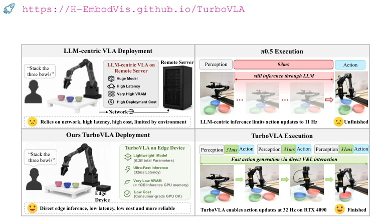
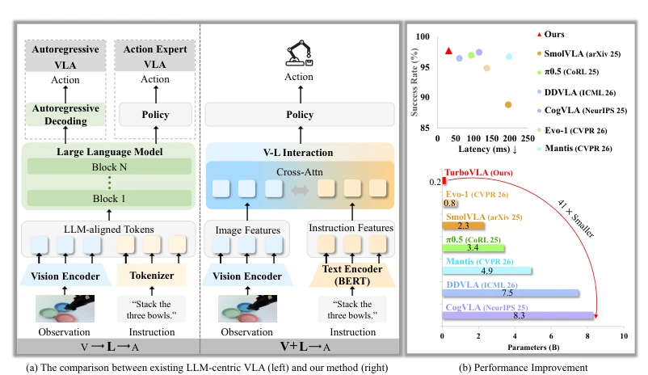
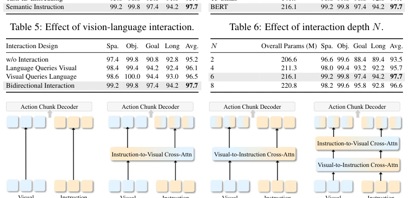

现有的 VLA 模型大多遵循 V → L → A 的路径，把视觉观测投影到 LLM 空间，再解码成动作。像 OpenVLA (Kim et al., 2024) 和 π0 (Black et al., 2025a) 虽然效果好，但计算和显存开销巨大。这种设计导致推理延迟高，限制了在资源受限平台上的实时执行。LLM 的通用推理能力对于底层控制往往是过剩的，执行级控制只需要指令条件化的场景理解，不需要开放式的语言生成。现有的加速方法如 OpenVLA-OFT (Kim et al., 2025) 或 DDVLA (Liang et al., 2026c) 虽然优化了动作生成，但依然保留了庞大的 LLM 骨干，无法根本解决显存和延迟瓶颈。因此，研究动机在于重新审视 VLA 架构，探索是否必须依赖大语言模型作为感知与动作的中心接口，提出一种更直接、高效的 V + L → A 范式，以平衡性能与效率。
—

Figure 1: TurboVLA enables compact local deployment and real-time language-conditioned manipulation with 0.2B parameters, 0.9 GB inference VRAM and 31.2 ms policy latency.
方法Method
TurboVLA 的整体框架摒弃了 LLM 骨干，采用 V + L → A 的直接映射。Pipeline 分为三步：首先是多模态特征编码，使用 DINOv3 作为视觉骨干提取图像特征，配合轻量级 BERT 编码器处理文本指令，两者投影到共享维度。其次是视觉 - 语言交互模块，这是核心创新点。它不通过 LLM 对齐，而是使用双向交叉注意力机制（Bidirectional Cross-Attention），让视觉特征感知指令，指令特征感知场景，直接融合生成动作就绪特征。最后是动作块解码器，采用 ACT-style 的轻量 Transformer 解码器，并行预测连续动作块，无需自回归生成。这种设计避免了 LLM 的中间表示依赖，显著降低了激活显存和注意力计算成本。此外，机器人状态特征被单独编码并引入解码器，确保控制时的本体感知。整个流程在单次前向传播中完成，实现了低延迟的连续控制。
—

Figure 2: From LLM-centric VLA to TurboVLA. (a) LLM-centric VLA predicts actions from large- language-model representations, whereas TurboVLA directly fuses visual and instruction features for continuous control. (b) TurboVLA achieves highly competitive LIBERO performance with substantially lower latency and model scale.

Figure 5: Vision-language interaction variants. (a) Directly concatenating visual and instruction features. (b) Updating only the instruction features using visual features. (c) Updating only the visual features using instruction features. (d) Bidirectional interaction jointly updates both feature streams.
Figure 4: Real-world evaluation on the AgileX Piper platform. Left: our single-arm setup with a wrist-view RGB-D camera and a third-view RGB-D camera, together with the objects used in the four tasks. Right top: success-rate comparison between TurboVLA and π0.5 on four real-world manipulation tasks. Right bottom: qualitative execution examples of TurboVLA.